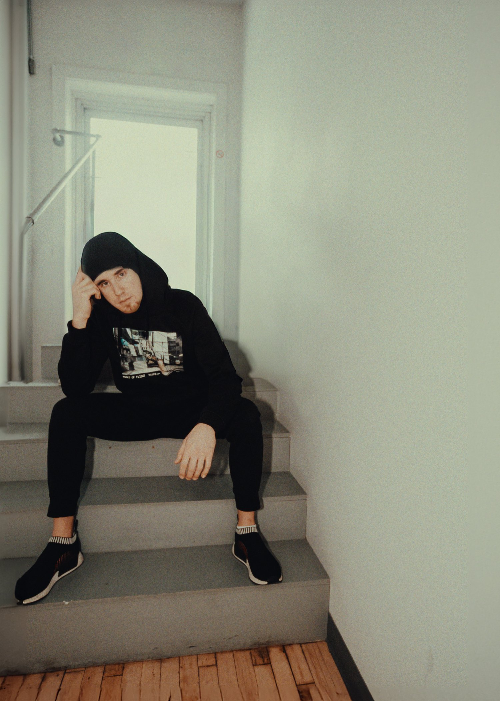

Bio
Martin Roméo est un cinéaste francophone bilingue de Winnipeg, au Manitoba : réalisateur, monteur et directeur photo pour la télévision, le documentaire et la musique.
Son parcours couvre toute la chaîne de production : caméra, département du son et mixage audio, effets visuels et animation graphique, production, composition musicale et montage. Il peut tourner une scène, la monter, la mixer et en composer la musique, et il comprend ce que chaque département attend des autres.
Parmi ses crédits : Malgré Moi (Radio-Canada), C’est moi qui décide! (Unis TV) et Métis Foodies (APTN). Du côté musical, il a travaillé avec William Prince, Faouzia et John Legend.
Il est membre de la Guilde canadienne des réalisateurs (DGC) et diplômé de l’ASC Masterclass.
Télécharger le CV ↓